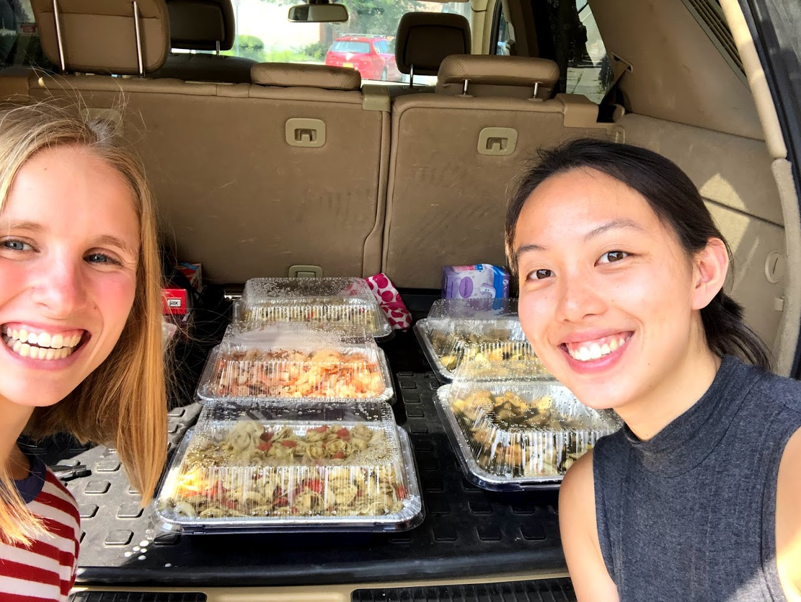

<div class="row justify-content-center">
  <div class="col-md-6 col-sm-10 box-2 shadow">
    <!-- Carousel -->
    <div id="photos" class="carousel slide" data-bs-ride="carousel">
      <div class="carousel-inner">
        <div class="carousel-item active">
          
        </div>
        <div class="carousel-item">
          
        </div>
      </div>
    </div>
  </div>
</div>
